ANOMALİ nedir?
ANOMALİ, gerçek suç ve gizemli dosyaları inceler. Dünyada neler olduğunu anlamaya çalışır. Çalıştığı konuları yüzeysel değil, detaylı bir şekilde inceler. Anlatılanın arkasındakini arar.
Gerçek suç ve gizem belgeselleri.
Belgelerle.
Her dosya bir listeye ait. Renk, listenin rengi.
Kadınları yedi sene sokakta yürümekten bile korkutan dosya.
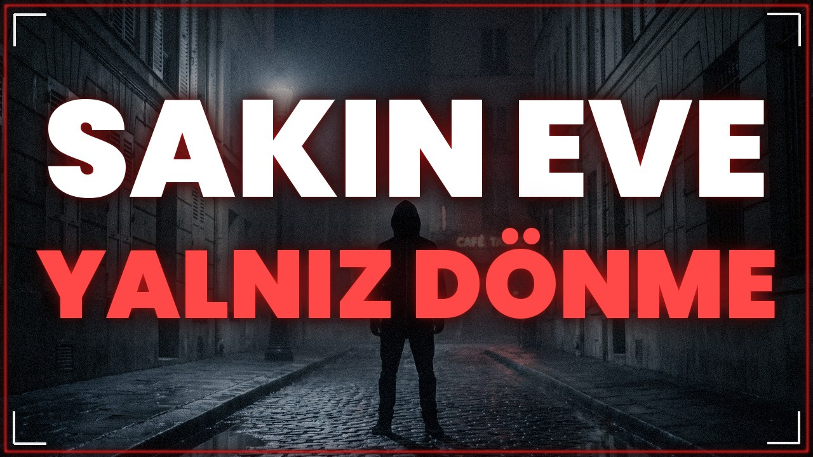
Columbine önlenebilir miydi?
80'li yıllarda Minnesota'da kadınların yıllarca gece dışarı çıkmaktan çekinmesine sebep olan, filmlere konu olan ve literatüre 'Ağlak Sesli' olarak…
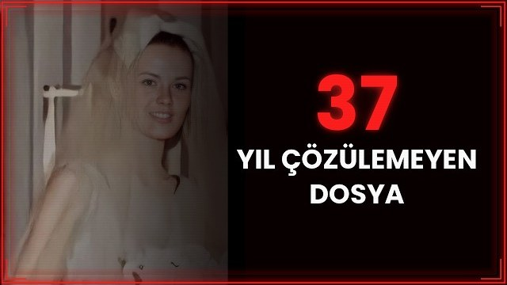
Ne kurbanın ne de zanlının kim olduğunun bilinmediği bir dava düşünün. Yıllarca ilerleme kaydedilemeyen bir dosya.
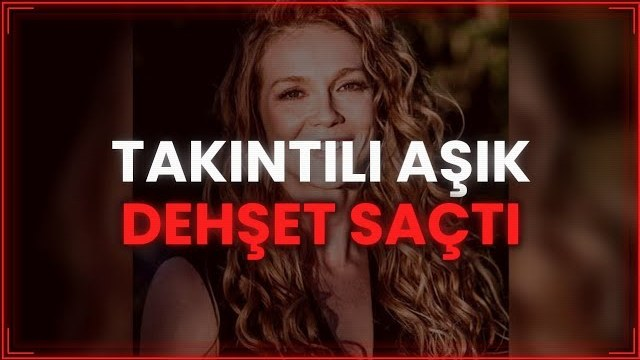
Geleceğin en büyük sporcularından biri olarak gösterilen genç bir kadın, trajik bir son ve ardında cevap bekleyen onlarca soru…
İnternetin en büyük illegal alışveriş ağlarından Silk Road, yani İpek Yolu’nun kurucusu Ross Ulbricht’in inanılmaz hikâyesini sizin için derledik.
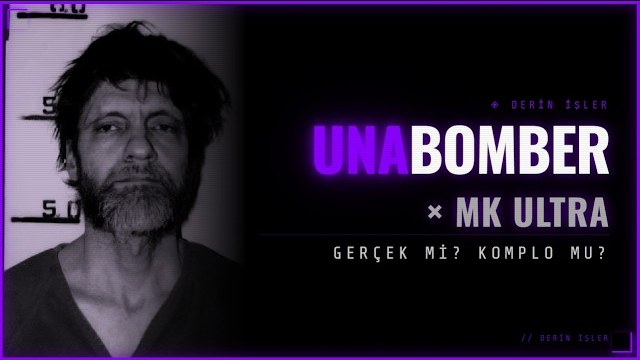
Yaklaşık yirmi yıl boyunca yakalanmayan Unabomber’ın (Ted Kaczynski) hayatını tüm detaylarıyla araştırdığınızda ortaya oldukça garip bir durum…
Krokiler, maketler, belgeler, haritalar. Hepsi kendi yapımımız.
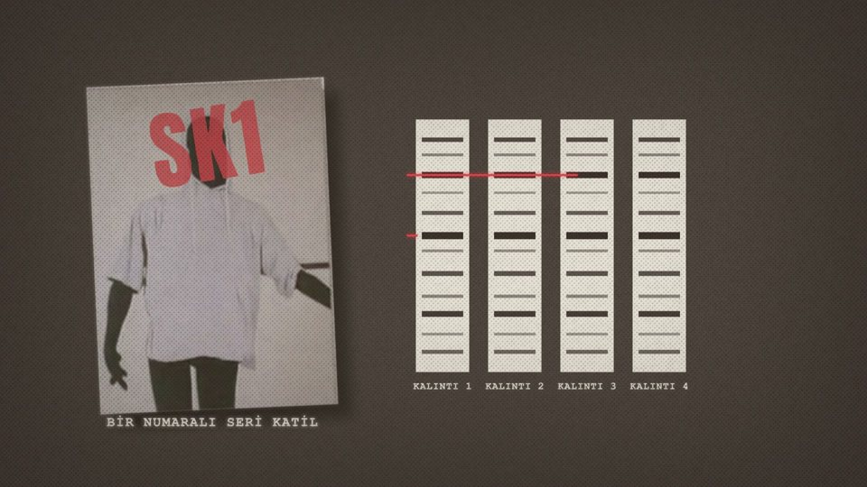
Guy Georges DNA kalıntısı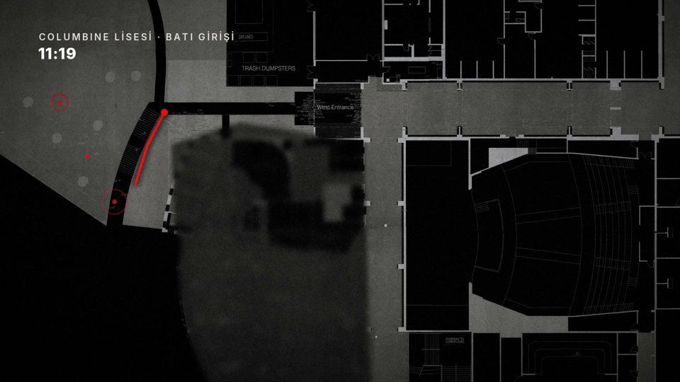
Columbine Batı girişi, 11:19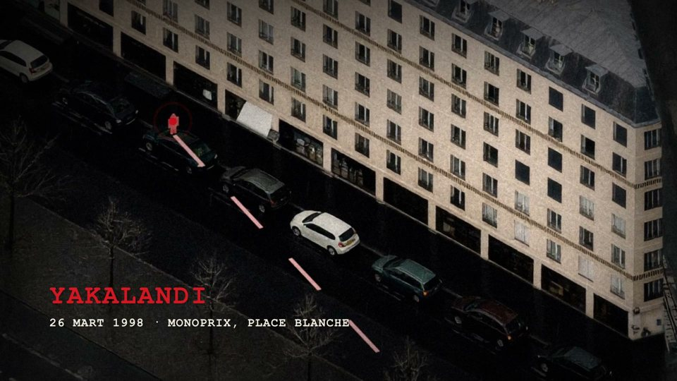
Guy Georges Yakalandı, 26 Mart 1998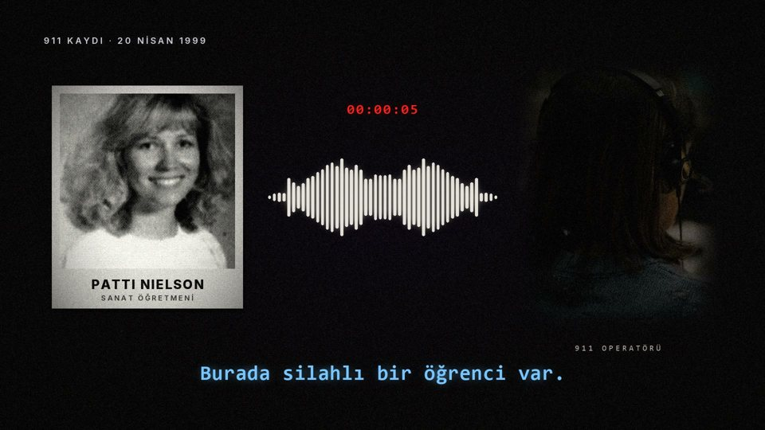
Columbine 911 kaydı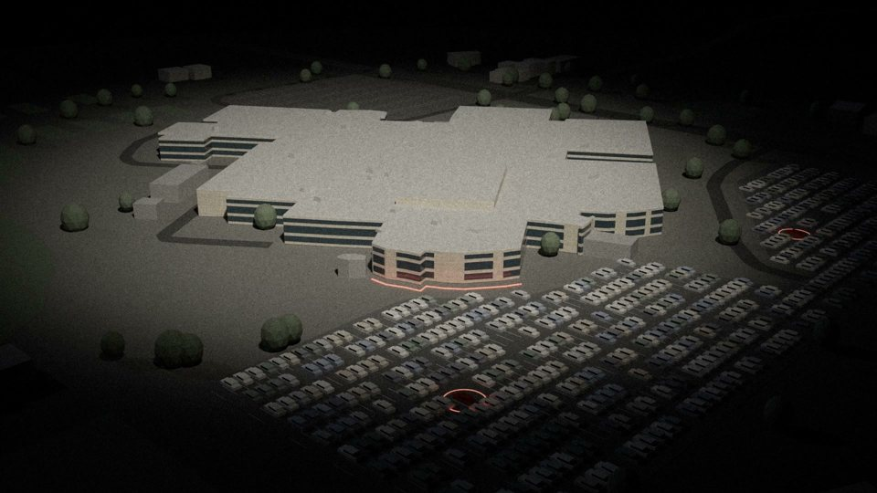
Columbine Okul maketi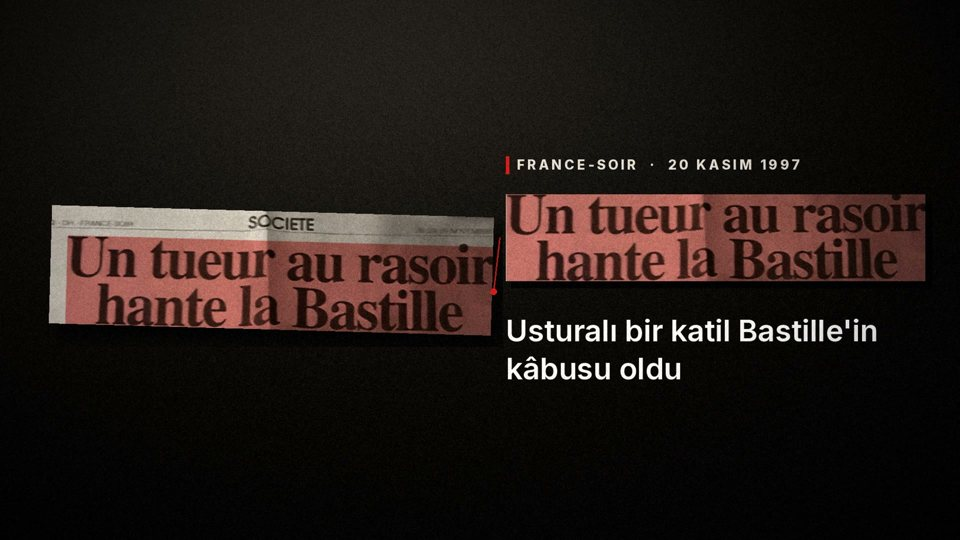
Guy Georges France-Soir, 1997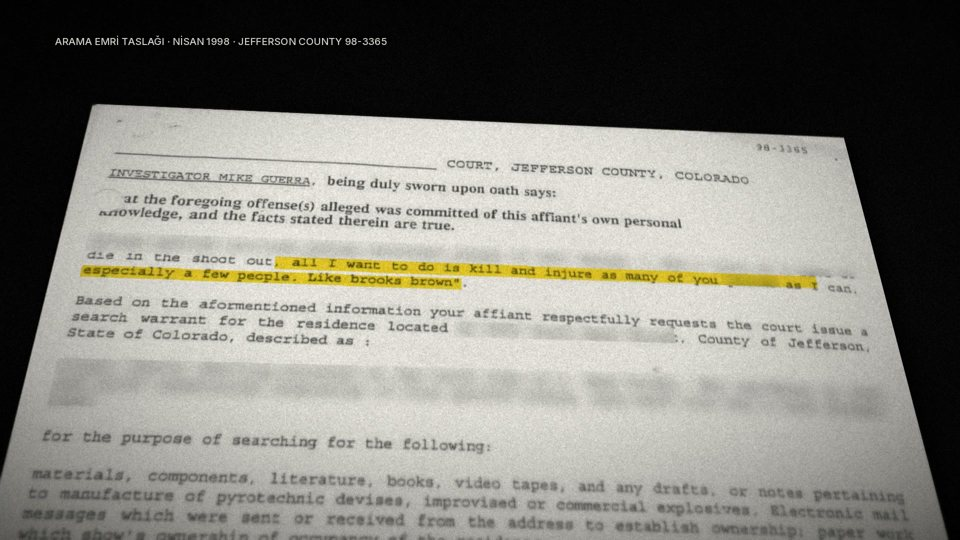
Columbine Arama emri taslağı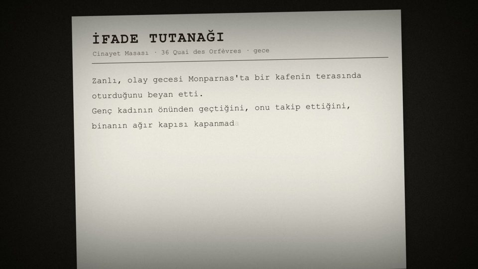
Guy Georges İfade tutanağı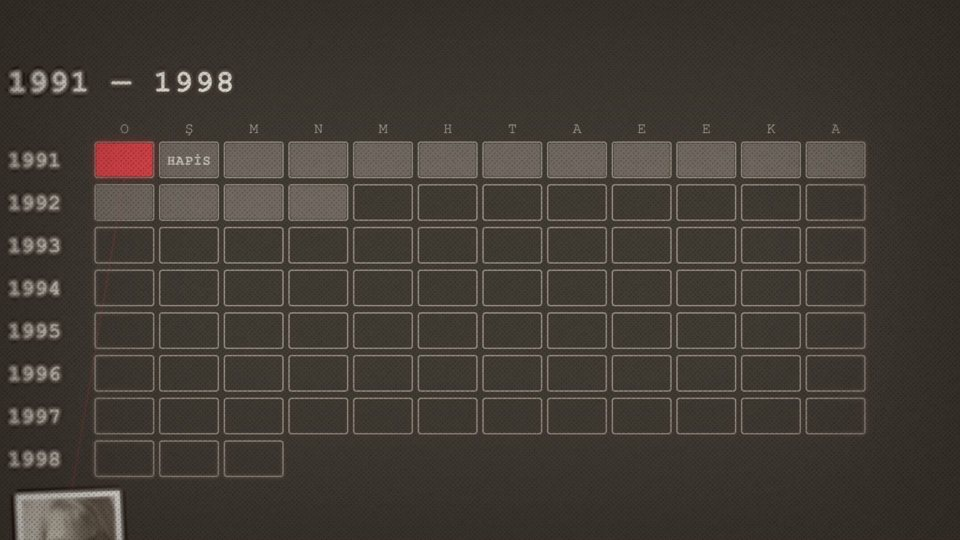
Guy Georges 1991–1998 takvimi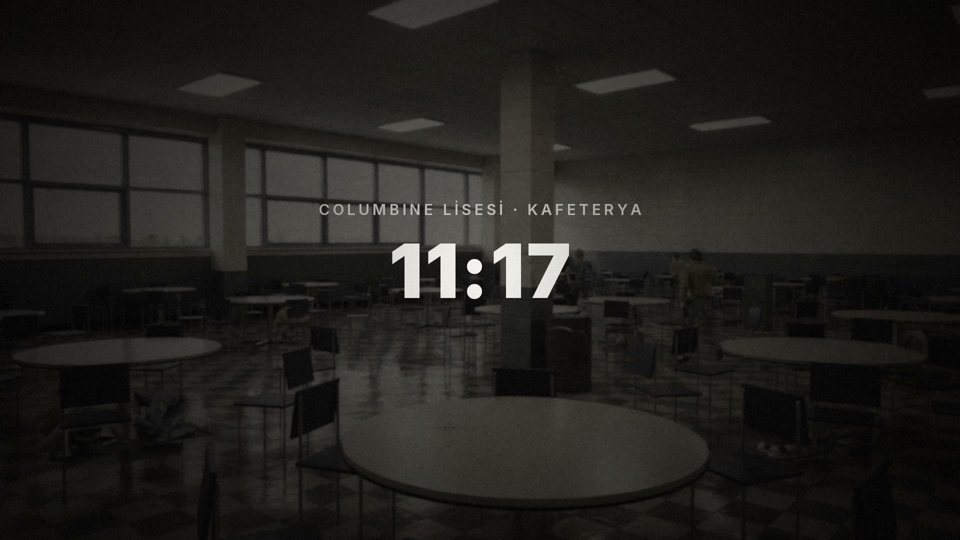
Columbine Kafeterya, 11:17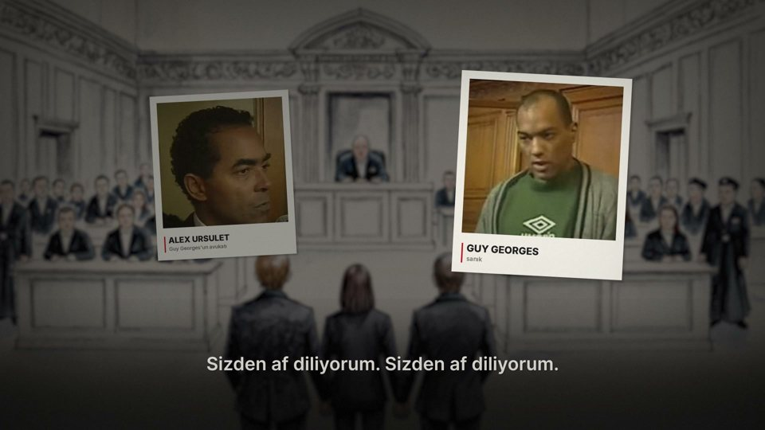
Guy Georges Mahkeme, itiraf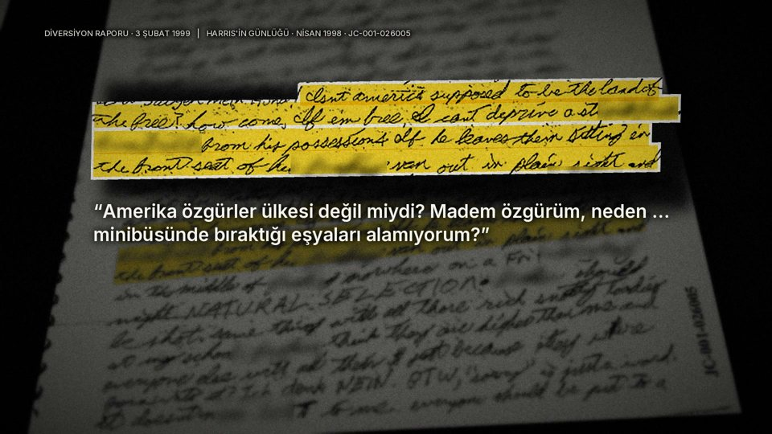
Columbine Günlük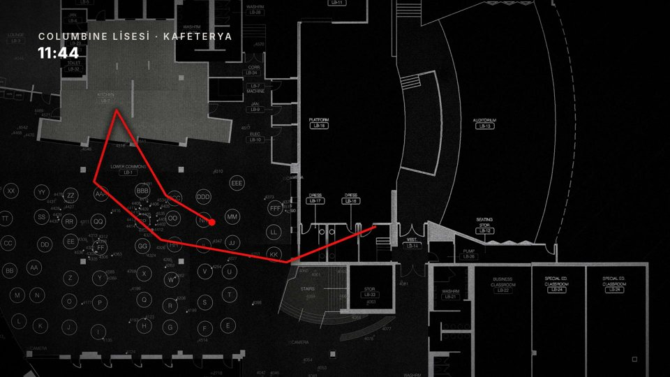
Columbine Güzergâh, 11:44ANOMALİ, gerçek suç ve gizemli dosyaları inceler. Dünyada neler olduğunu anlamaya çalışır. Çalıştığı konuları yüzeysel değil, detaylı bir şekilde inceler. Anlatılanın arkasındakini arar.